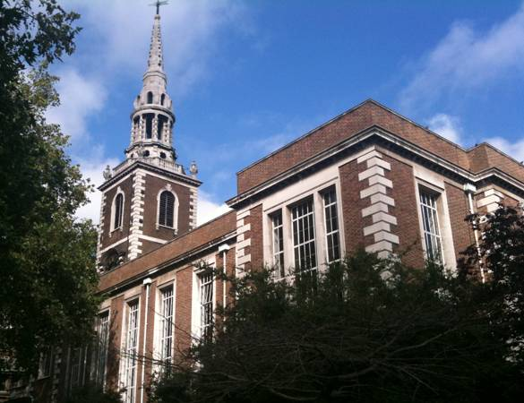

St. Marys Church, Islington. In November 1784 Johnson left London for the last time on a visit to the home of his friend George Strahan, the Vicar of St. Marys. The author’s final moments were filled with mental anguish and delusions. In return for Strahan’s kindness, Johnson bequeathed him many prized volumes and a personal diary manuscript, which Strahan later published in full as ‘Prayers and Meditations’.